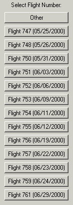

Description For Using T28DISPLAY program – Version 1.0
It is designed to display the one per second data recorded during the STEPS 2000 project. After choosing this option the following window will open:
 Choose a flight number and a new window
opens!
The user can choose the range of
buffers to be viewed (or the time interval).
A new window asking the number of graphs to be included in the display
is opened.
If the user chooses “2-GRAPHS/PAGE”,
then a list with all “slow” parameters is listed, and the user is asked to
choose the parameters to be displayed.
After choosing the tags, the graph
is shown as:
The user is asked if a post script
file is to be created: If the answer is “Yes”, the user is asked
which orientation the file should be saved:
The default name is idl.ps, but the user
can choose any desired new name, with the extension “*.ps”. The file is being saved under Psfiles
subdirectory.